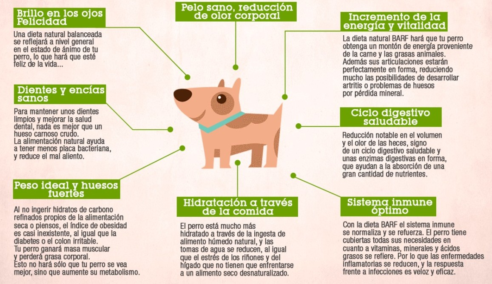
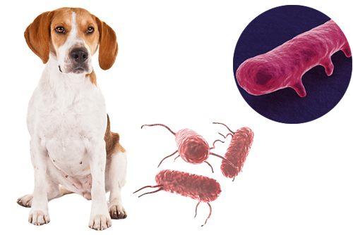

La dieta BARF, también conocida como alimentación cruda biológicamente apropiada, ha ganado cada vez más seguidores entre quienes buscamos darles a nuestras mascotas una vida más natural y saludable. Esta forma de alimentación se basa en ofrecer carne cruda, huesos carnosos, vísceras frescas, frutas y verduras, imitando lo que nuestros peludos comerían en estado salvaje. Más allá de una moda, muchos tutores han notado mejoras visibles: un pelaje más brillante, más energía, mejor digestión y hasta menos mal olor en las heces. Pero como toda decisión sobre la salud de nuestros compañeros de vida, también requiere compromiso, información y acompañamiento veterinario. En esta guía te contamos todo lo que necesitas saber antes de hacer el cambio: beneficios, riesgos, cómo empezar y en qué casos es mejor evitarla. Porque cuando se trata del bienestar de quienes más nos aman, lo mejor es decidir con el corazón… y con buena información.
Beneficios de la dieta BARF
Muchos tutores que han probado la dieta BARF notan cambios positivos en sus mascotas desde las primeras semanas. El pelaje se vuelve más brillante y suave, las heces son menos abundantes y con menor olor, y la energía de perros y gatos mejora notablemente. Además, al masticar huesos carnosos crudos, se favorece la limpieza dental natural. Algunos animales también presentan menos alergias o problemas digestivos. Cada cuerpo es diferente, pero una alimentación más cercana a su naturaleza suele marcar la diferencia.
Riesgos a tener en cuenta
Aunque suena ideal, la dieta BARF no está exenta de riesgos si se aplica sin la orientación adecuada. Una mala planificación puede provocar deficiencias nutricionales graves, especialmente en calcio, vitaminas o ácidos grasos esenciales. También hay que tener precaución con las bacterias presentes en la carne cruda, como Salmonella o E. coli, que pueden afectar a tu mascota o incluso a tu familia si no se manipulan bien los alimentos. Y los huesos, si no se eligen correctamente, pueden causar atragantamientos o lesiones digestivas. Por eso, informarse bien es fundamental.
Recomendaciones antes de comenzar

Si estás considerando alimentar a tu mascota con dieta BARF, lo mejor es dar el paso acompañado de un veterinario o zootecnista especializado en nutrición. Cada animal tiene necesidades distintas, y no todas las mascotas se adaptan igual. Compra ingredientes frescos, congela todo lo necesario, y respeta las proporciones entre carne, hueso, órganos y vegetales. Empieza de forma gradual, observa cómo responde tu peludo y mantén controles periódicos. Recuerda: una buena intención solo se transforma en bienestar cuando va de la mano del conocimiento.
Enlaces recomendados para profundizar
Si quieres aprender más y tomar una decisión informada sobre la dieta BARF, te comparto algunas fuentes confiables que te ayudarán a entender mejor sus beneficios, riesgos y cómo implementarla correctamente. Recuerda que cada mascota es única, y estar bien informado es el primer paso para cuidar su salud con responsabilidad.